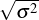

6 The standard deviation σ is just the square root of the variance (); this is often summarized as the expression “root mean square” or RMS. Sometimes you’ll see the mean written using the Greek letter μ (m, for “mean”). Notation varies somewhat, though these symbols are fairly standard.